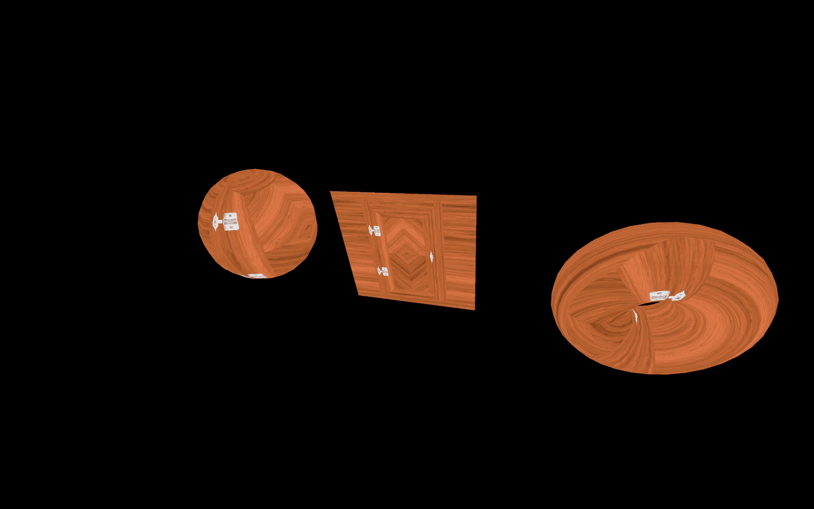
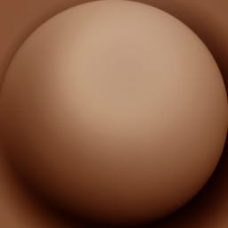

Materials are used to put a color on each visible pixel of the geometries.
The algorithms that decide on the color of each pixel are written in programs called shaders. Writing shaders is one of the most challenging parts of WebGL and Three.js, but don't worry; Three.js has many built-in materials with pre-made shaders.
We will discover how to create our own shaders in a future lesson. For now, let's use Three.js materials.
The starter doesn't contain any object. This is an excellent occasion to revise the basics of creating Meshes.
To test the materials, we should prepare a lovely scene and load some textures.
Create 3 Meshes composed of 3 different geometries (a sphere, a plane, and a torus) and use the same MeshBasicMaterial on all of the 3. Yes, you can use one material on multiple meshes. Move the sphere on the left and the torus on the right to separate them.
The add(...) method support adding multiple objects at once:
We can now rotate our objects on our tick function as we did on the Animation lesson:
You should see your 3 objects spinning slowly.
The materials we are going to discover are using textures in many different ways. Let's load some textures using the TextureLoader as we did on the Textures lesson.
All the texture images are located in the /static/textures/ folder. For now, we will load all the door textures located in the /static/textures/door/ folder, the first matcap texture located in the /static/textures/matcaps/ folder and the first gradient texture located in the /static/textures/gradients/ folder.
Make sure to do that before instantiating the material:
To ensure that all the textures are well loaded, you can use them on your material with the map property, as we saw in the Textures lesson.

Until now, we only used the MeshBasicMaterial, which applies a uniform color or a texture on our geometry.
If you search for "material" on the Three.js documentation, you'll see that there are many classes we can use. Let's try them.
MeshBasicMaterial is probably the most "basic" material... But there are multiple properties that we haven't cover yet.
You can set most of those properties while instancing the material in the object we send as a parameter, but you can also change those properties on the instance directly:
We will use the second method, but feel free to do as you like.
The map property will apply a texture on the surface of the geometry:
The color property will apply a uniform color on the surface of the geometry. When you are changing the color property directly, you must instantiate a Color class. You can use many different formats:
Combining color and map will tint the texture with the color:
The wireframe property will show the triangles that compose your geometry with a thin line of 1px regardless of the distance of the camera:
The opacity property controls the transparency but, to work, you should set the transparent property to true to inform Three.js that this material now supports transparency:
Now that the transparency is working, we can use the alphaMap property to control the transparency with a texture:
The side property lets you decide which side of a face is visible. By default, the front side is visible (THREE.FrontSide), but you can show the backside instead (THREE.BackSide) or both (THREE.DoubleSide):
You should see both the front and the back of the plane.
Try to avoid using THREE.DoubleSide because rendering both sides means having twice more triangles to render.
Some of these properties like wireframe or opacity can be used with other types of materials. We won't repeat those every time.
The MeshNormalMaterial displays a nice purple, blueish, greenish color that looks like the normal texture we saw in the Textures lessons. That is no coincidence because both are related to what we call normals:
Normals are information encoded in each vertex that contains the direction of the outside of the face. If you displayed those normals as arrows, you would get straight lines comings out of each vertex that composes your geometry.
You can use Normals for many things like calculating how to illuminate the face or how the environment should reflect or refract on the geometries' surface.
When using the MeshNormalMaterial, the color will just display the normal relative's orientation to the camera. If you rotate around the sphere, you'll see that the color is always the same, regardless of which part of the sphere you're looking at.
While you can use some of the properties we discovered with the MeshBasicMaterial like wireframe, transparent, opacity and side, there is also a new property that you can use, which is called flatShading:
flatShading will flatten the faces, meaning that the normals won't be interpolated between the vertices.
MeshNormalMaterial can be useful to debug the normals, but it also looks great, and you can use it as it is just like ilithya did on her portfolio https://www.ilithya.rocks.
MeshMatcapMaterial is a fantastic material because of how great it can look while being very performant.
For it to work, the MeshMatcapMaterial needs a reference texture that looks like a sphere.

The material will then pick colors on the texture according to the normal orientation relative to the camera.
To set that reference matcap texture, use the matcap property:
The meshes will appear illuminated, but it's just a texture that looks like it.
The only problem is that the illusion is the same regardless of the camera orientation. Also, you cannot update the lights because there are none.
Try different textures available on the /static/textures/matcaps/ folder (just one of the lines below):
Regarding where to find matcaps textures, you can do a simple search on the web like any type of textures. Make sure you have the right to use the texture if it's not for personal usage. There is also this vast list of matcaps: https://github.com/nidorx/matcaps
You can also create your own matcaps using a 3D software by rendering a sphere in front of the camera in a square image. Finally, you can try to make a matcap in 2D software like Photoshop.
The MeshDepthMaterial will simply color the geometry in white if it's close to the camera's near value and in black if it's close to the far value of the camera:
You can use this material for special effects where you need to know how far the pixel is from the camera. We will use it in a future lesson.
The following materials need lights to be seen. Let's add two simple lights to our scene.
Create an AmbientLight and add it to the scene:
Create a PointLight and add it to the scene:
We will see more about lights, how they work and how to tweak them in a future lesson.
The MeshLambertMaterial is the first material reacting to light that we are going to use:
Things are getting realistic, as you can see. While the illumination isn't very convincing, it's a good start.
MeshLambertMaterial supports the same properties as the MeshBasicMaterial but also some properties related to lights. We will see those properties later in the lesson with more adequate materials.
The MeshLambertMaterial is the most performant material that uses lights. Unfortunately, the parameters aren't convenient, and you can see strange patterns on the geometry if you look closely at rounded geometries like the sphere.
The MeshPhongMaterial is very similar to the MeshLambertMaterial, but the strange patterns are less visible, and you can also see the light reflection on the surface of the geometry:
MeshPhongMaterial is less performant than MeshLambertMaterial. However, it doesn't really matter at this level.
You can control the light reflection with the shininess property. The higher the value, the shinier the surface. You can also change the color of the reflection by using the specular property:
The light reflection will have a blue-ish color.
The MeshToonMaterial is similar to the MeshLambertMaterial in terms of properties but with a cartoonish style:
By default, you only get a two parts coloration (one for the shadow and one for the light). To add more steps to the coloration, you can use the gradientMap property and use the gradientTexture we loaded at the start of the lesson:
If you test this, you'll see that the cartoon effect doesn't work anymore. That is because the gradient texture we used is tiny, and the pixels of that texture are blended. Yes, it's a matter of minFilter, magFilter, and mipmapping like we saw in the Textures lesson.
To fix this, we can simply change the minFilter and magFilter to THREE.NearestFilter.
Using THREE.NearestFilter means that we are not using the mip mapping, we can deactivate it with gradientTexture.generateMipmaps = false:
You should now see the cartoon effect with an intermediate step.
You can try with even more steps by using the image located in /static/textures/gradients.5.jpg:
The MeshStandardMaterial uses physically based rendering principles. Yes, we are talking about the PBR we saw in the Textures lesson. Like the MeshLambertMaterial and the MeshPhongMaterial, it supports lights but with a more realistic algorithm and better parameters like roughness and metalness.
It's called "standard" because the PBR is becoming a standard in many software, engines, and libraries. The idea is to have a realistic result with realistic parameters, and you should have a very similar result regardless of the technology you are using:
You can change the roughness and the metalness properties directly:
While this isn't required, now would be an excellent time to add a debug UI. That will be very useful to test the different properties.
First, we must add the Dat.GUI dependency to our project. In the terminal, on the project folder (where the server should be currently running), use the following command:
Then, on top of your code, import dat.gui (don't forget to re-launch the server with npm run dev if you stopped it):
You can now create an instance of it:
And add the tweaks (after creating the material):
And that's it. You can now change the metalness and the roughness as you like.
Let's continue with the other properties of the MeshStandardMaterial.
The map property allows you to apply a simple texture. You can use doorColorTexture:
The aoMap property (literally "ambient occlusion map") will add shadows where the texture is dark. For it to work, you must add what we call a second set of UV (the coordinates that help position the textures on the geometries).
We can simply add new attributes like we did on the Geometries lesson and use the default uv attribute. In more simple terms, we duplicated the uv attribute.
Call this new attribute uv2:
You can now add the aoMap using the doorAmbientOcclusionTexture texture and control the intensity using the aoMapIntensity property:
The crevices should look darker, which creates contrast and adds dimension.
The displacementMap property will move the vertices to create true relief:
It should look terrible. That is due to the lack of vertices on our geometries (we need more subdivisions) and the displacement being way too strong:
Instead of specifying uniform metalness and roughness for the whole geometry, we can use metalnessMap and roughnessMap:
The reflection looks weird because the metalness and roughness properties still affect each map respectively. We should comment them or use their original values:
The normalMap will fake the normal orientation and add details on the surface regardless of the subdivision:
You can change the normal intensity with the normalScale property. Be careful, it's a Vector2:
And finally, you can control the alpha using the alphaMap property. Don't forget to set the transparent property to true:
Here's a beautiful door. Feel free to tweak the properties and try stuff.
The MeshPhysicalMaterial is the same as the MeshStandardMaterial but with support of a clear coat effect. You can control that clear coat's properties and even use a texture as in this Three.js example, but we won't try this one here.
You can use PointsMaterial with particles. We will see more about that in a dedicated lesson.
ShaderMaterial and RawShaderMaterial can both be used to create your own materials but we will see more about that in a dedicated lesson.
The environment map is like an image of what's surrounding the scene. You can use it to add reflection or refraction to your objects. It can also be used as lighting information.
We haven't covered it yet, but you can use it with many of the materials we saw.
First, let's setup a very simple MeshStandardMaterial with the debug UI as we did earlier:
To add the environment map to our material, we must use the envMap property. Three.js only supports cube environment maps. Cube environment maps are 6 images with each one corresponding to a side of the environment.
You can find multiple environment maps in the /static/textures/environmentMap/ folder.
To load a cube texture, you must use the CubeTextureLoader instead of the TextureLoader.
Instantiate the CubeTextureLoader before instantiating the material and call its load(...) method but use an array of paths instead of one path:
You can now use the environmentMapTexture in the envMap property of your material:
You should see the environment reflect on the surface of the geometry. Try to tweak the metalness and roughness for different results.
You can also test the other environment maps in the /static/textures/environmentMap/ folder.
To find cool environment maps, you can always do a simple search on the web and make sure you have the right to use the environment map if it's not for personal usage.
One of the best sources is HDRIHaven. This website has hundreds of awesome HDRIs. HDRI stands for High Dynamic Range Imaging. They are composed of one image (not a cube map) and contain more data than a simple image, thus improving lighting information for a more realistic result. HDRIHaven images are free and under CC0 license, which means that you can do anything you want with them without having to credit the authors. But if you appreciate their work, you can thank them by subscribing to their Patreon.
But we have a problem. As we said, Three.js only supports cube maps. To convert an HDRI to a cube map, you can use this online tool: https://matheowis.github.io/HDRI-to-CubeMap/
Upload an HDRI, rotate it as you please, and download a cubemap version composed of 6 images. The default format is .png, and you'll have to convert them to .jpg if you want.